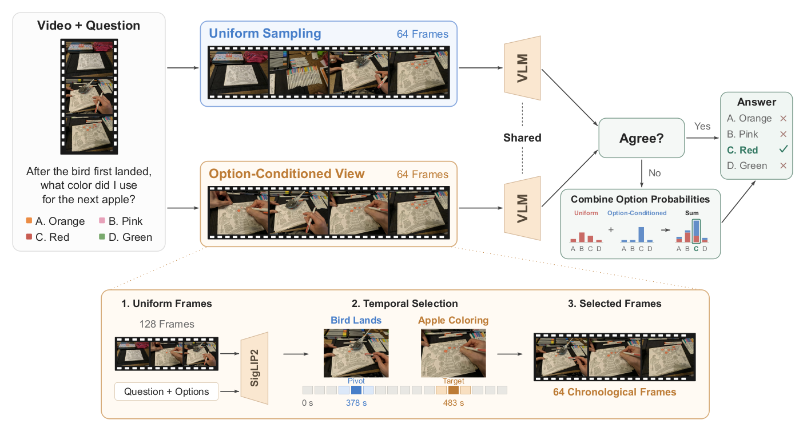
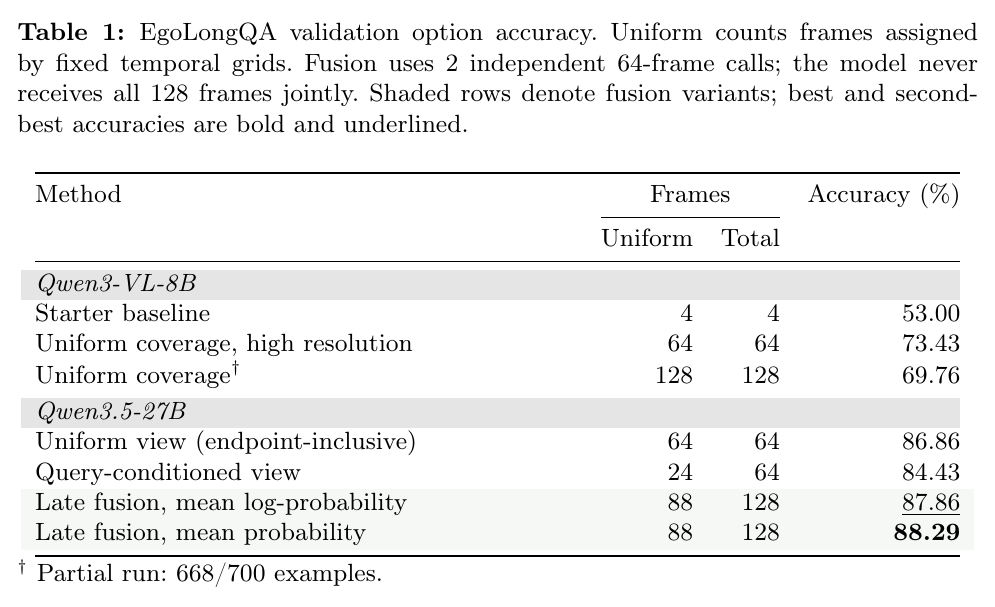
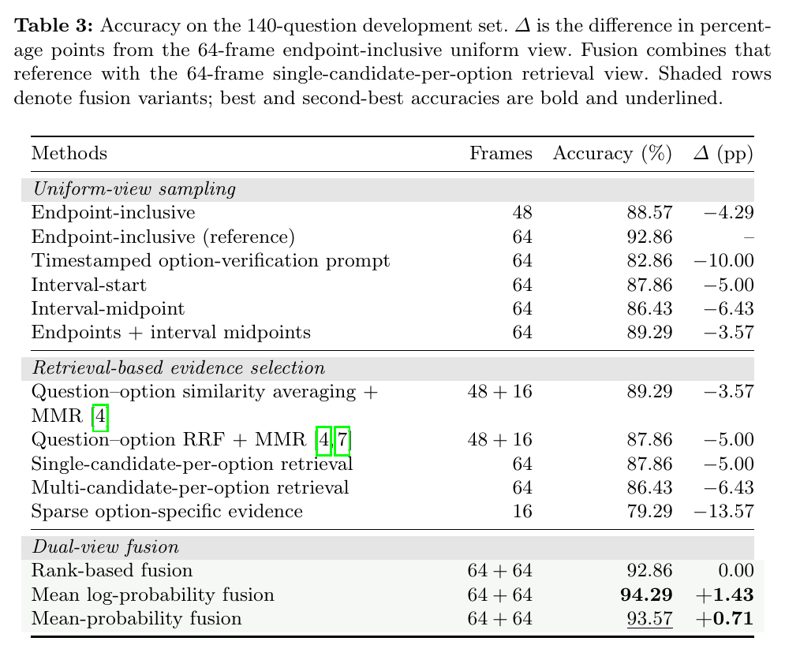
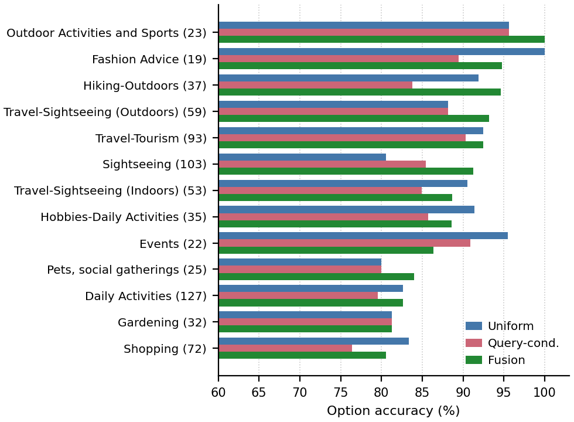

Dual-View Frame Selection for Egocentric Long-Video Question Answering
*Authors are listed in alphabetical order.
Wearable AI Grand Challenge · EgoLongQA Track
Team kth_saar · Ranked 4th (Large Model Division)

Abstract
EgoLongQA, the long-video question-answering track of the Wearable AI Grand Challenge, requires answering multiple-choice questions about long-form egocentric videos. Multimodal large language models (MLLMs) can inspect only a small fraction of the recorded frames. We present a training-free method with complementary uniform and query-conditioned views. The uniform view samples the complete timeline uniformly, while the query-conditioned view retrieves relevant frames with local temporal context. The MLLM Qwen3.5-27B independently decodes an answer from each view, and on disagreements we apply output-level late fusion by averaging the normalized answer-label distributions. Model scaling produces the largest gain, raising accuracy from 73.43% to 86.86% under uniform sampling. The uniform view preserves coverage of the full recording, whereas the query-conditioned view recovers brief evidence that uniform sampling can miss. Combining them reaches 88.29% on public validation and 86.58% on the hidden test set.
Experimental Results
Main Results
Dual-View Selection on EgoLongQA
Increasing the frame budget and resolution lifts the Qwen3-VL-8B starter setup from 53.00% to 73.43%. Under the same uniform-view formulation, Qwen3.5-27B reaches 86.86%, and mean-probability late fusion with the query-conditioned view reaches 88.29% on the 700-question validation split. The submitted system scores 86.58% on the hidden test set.

Ablations
Sampling, Retrieval, and Fusion
On a balanced 140-question development set, the 64-frame endpoint-inclusive grid is the strongest single view, while interval-aligned grids and smaller budgets lose accuracy. Retrieval variants, including maximal marginal relevance and reciprocal-rank fusion, do not recover the loss, and probability fusion is the only variant that improves on the reference.

Per-Category Accuracy
Where the Two Views Complement
The two views fail on different categories. Fusion improves over the uniform view most clearly on Sightseeing and loses the most on Events and Fashion Advice, while Shopping, Gardening, and Daily Activities remain the weakest categories.

Citation
@inproceedings{gaur2026dualview,
title = {Dual-View Frame Selection for Egocentric Long-Video Question Answering},
author = {Gaur, Arihant and Grover, Ankit and Kumar, Kshitij and Nair, Sidharth},
booktitle = {Wearable AI Workshop, European Conference on Computer Vision (ECCV)},
year = {2026}
}Contact
For questions or clarifications, please contact the corresponding author: